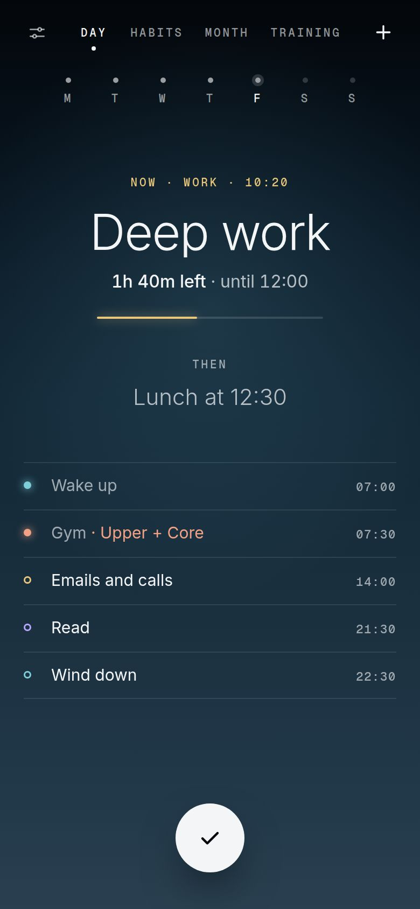
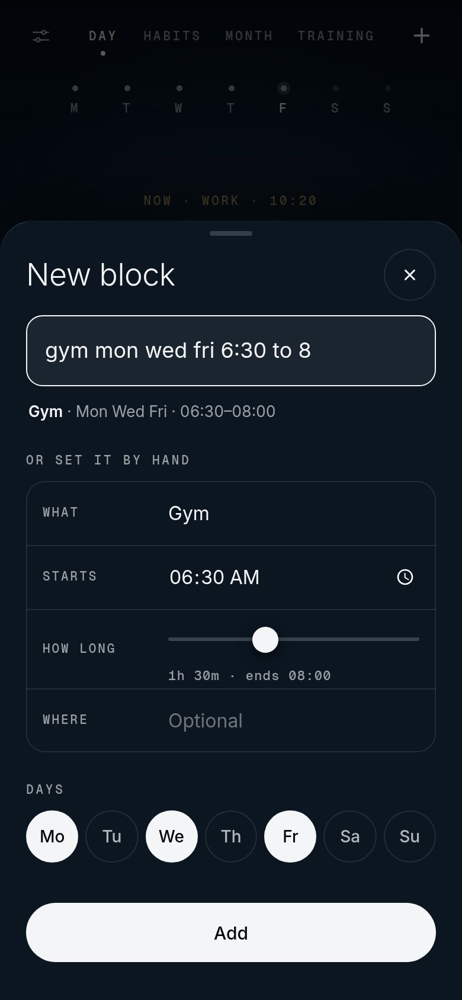
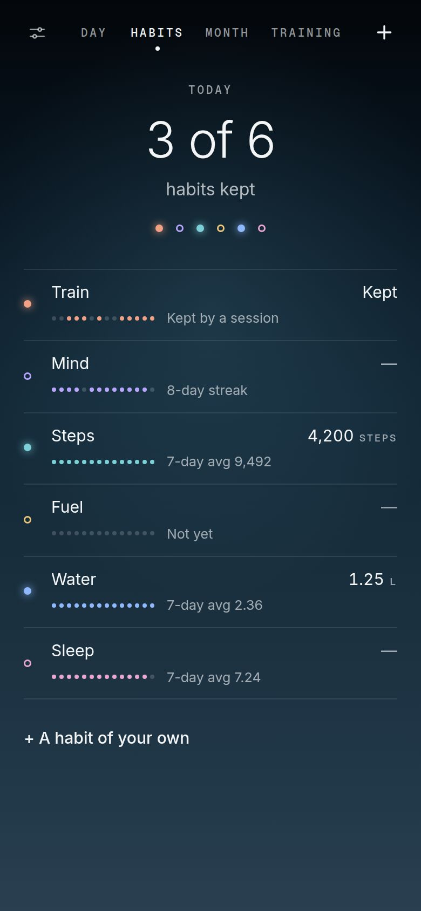
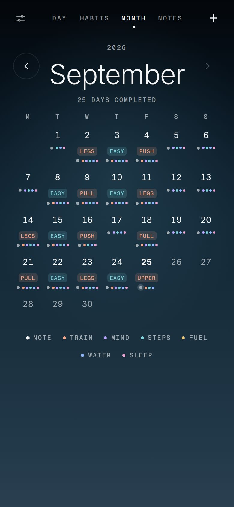
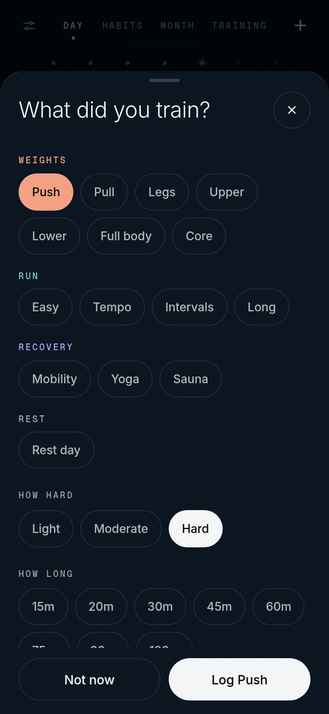

Now · 10:20
The block you are in.
Cadence is a day planner that shows one thing: what you are doing right now, how much of it is left, and what comes next.
Open Cadence
Plan in a sentence
Type it the way you would say it.
Cadence reads the days, the times and the length, then files the block on every day you named. You can still set it by hand if you want to.
gym mon wed fri 6:30 to 8

Habits
Six habits, two weeks each.
Each habit gets its own colour and a fortnight of dots. A colour tells you which habit it is. It never tells you whether you did it, and a day you missed is never painted red.

One check
A dot for every day you kept.
The white check on the day screen always ticks the block you are in, so you never go looking for it. Each tick fills that day's dot, and the month is those dots under every date, with a second dot on the days you trained.

Training
It asks what you trained.
Tick a gym, run or yoga block and Cadence asks what the session was, how hard it felt and how long it took. Thirty days of that becomes a picture of what you actually do.

No account
There is nothing to sign up for. Open it and start.
Stays in your browser
Your week, your ticks and your sessions are saved on your own device. Cadence sends none of it anywhere.
Yours to move
Copy a backup of everything in one press, and paste it back to restore it on another phone.